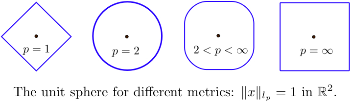

Week 1 Activities at ICTS
Day 1 - 6th May 2024
10:15 - Reached ICTS and had breakfast.
10:30 to 11:30 - Set up Visual Studio Code, tested Anaconda, and configured a Linux virtual machine.
11:30 to 1:00 - Attended a lecture on Bayesian procedures, including notes on the Spectral Einstein Code (SpEC) for simulating black hole systems.
1:15 to 2:00 - Lunch break.
2:00 to 2:30 - Worked on Python assignments to learn about arrays and plotting graphs.

2:30 to 4:00 - Lecture on Linear Algebra, covering topics such as vector spaces, norms, and functionals.
Reflection: ICTS is a welcoming space with an open environment. This week, I aim to create a write-up about the researchers’ work and a GitHub repository of my Python activities.
Day 2 - 8th May 2024
10:30 to 11:15 - Learned about normal distributions and probability contours on the way to ICTS.
11:30 - Visited ICTS’s supercomputer, "Sonic," learning about its architecture and capabilities for high-performance and high-throughput computing.
12:00 to 1:00 - Participated in a group discussion on recent astrophysics research papers from arXiv, led by PhD fellows. Topics included gravitational-wave selection effects, lensing, and black hole mergers. View meeting notes
2:00 to end of day - Worked on a Python notebook for extracting parameters from a damped sinusoid wave. (See "Day 2 Assignment" notebook for details.)
Reflection: Today, I was inspired by the use of high-power computing for solving real-world scientific problems, different from commercial tech applications.
Day 3 - 9th May 2024
Focused on Python and concepts related to gravitational wave analysis. Learned about:
- LIGO detectors and the physics of gravitational waves.
- Bayesian inference, data analysis techniques, and parameter estimation for gravitational wave data.
- Covariance matrix and Fourier transforms in data processing.
Continued working on Python assignments in Jupyter Notebooks, diving deeper into numerical analysis methods.
Day 3 at Home - 13th May 2024
Set up the Windows Subsystem for Linux (WSL) for an integrated development environment. Installed necessary software:
- Anaconda, Git, and VSCode extensions for SSH
- GUI apps like Firefox and Nautilus for a complete Linux experience
Reviewed and explored resources on parameter estimation.